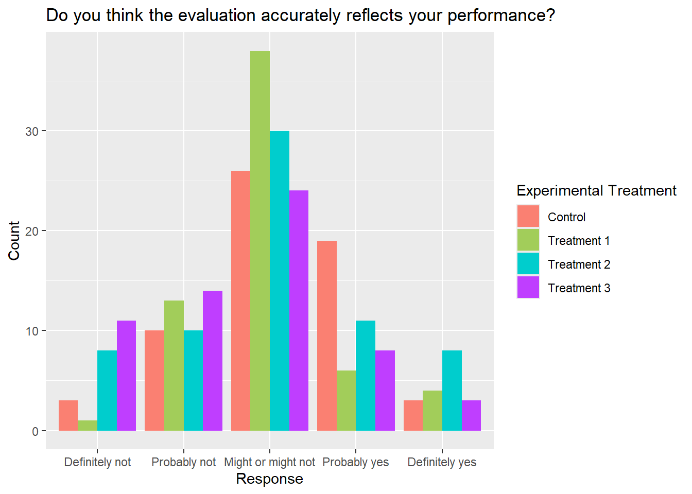
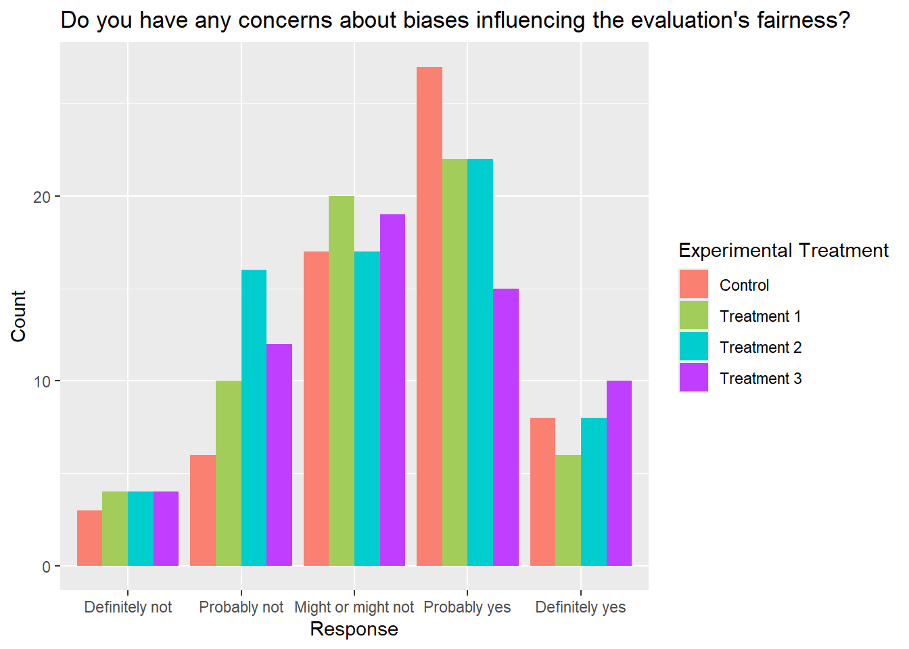
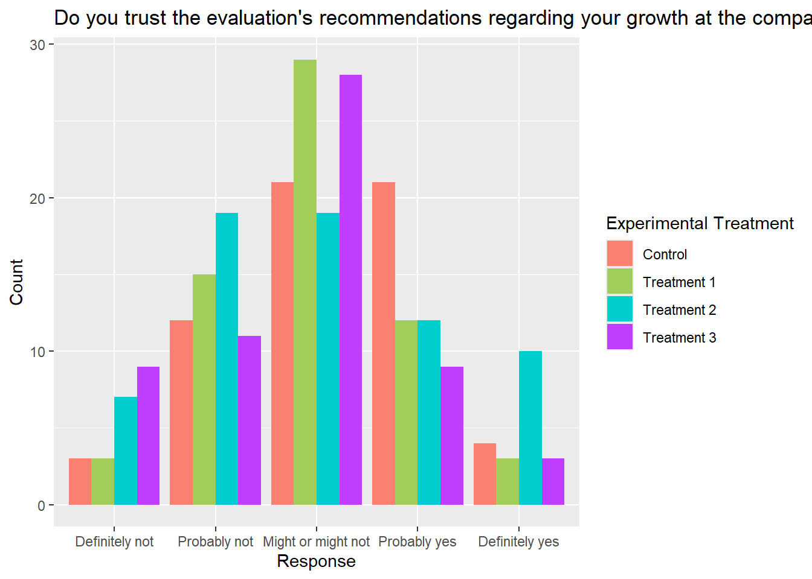
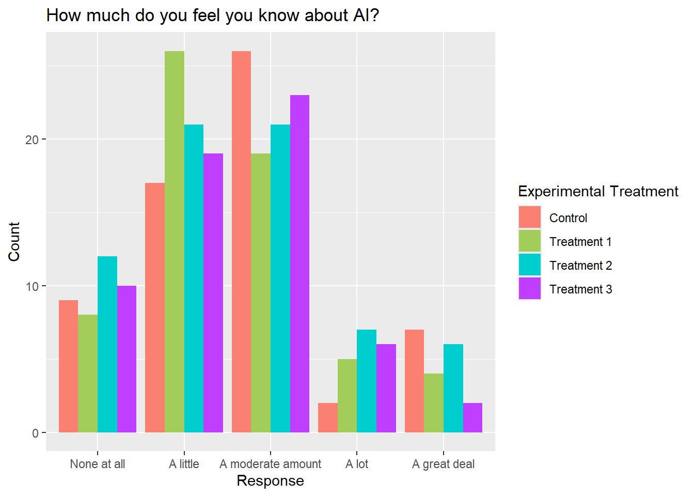
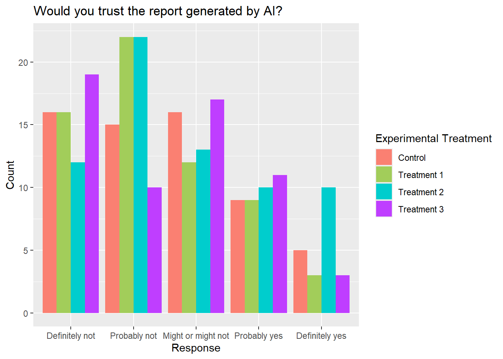

library(readr)
library(dplyr)
library(purrr)
library(ggplot2)
experimentData <- read_csv("data/rd_602_fall25_group11.csv", show_col_types = FALSE)
demographicsCodeBook <- read_csv("data/demographic-codebook-theorem-exchange.csv", show_col_types = FALSE)
# g11q6_1: Do you think the evaluation accurately reflects your performance?
# g11q6_2: Do you have any concerns about biases influencing the evaluation's fairness?
# g11q6_3: Do you trust the evaluation's recommendations regarding your growth at the company?
# g11q7: Artificial Intelligence or AI technology enables computers to complete tasks that humans typically do, such as creating text, images, and making decisions. How much do you feel you know about AI?
# g11q8: If your performance was to be evaluated solely based on AI without any manager intervention, would you trust the report generated by AI?
# g11industry: Which of the following best describes the industry you work in?
# g11role: Which of these best describes your current role?
recodeTreatments <- function (column) {
case_when(
column == "firstposter" ~ 1,
column == "secondposter" ~ 2,
column == "thirdposter" ~ 3,
column == "fourthposter" ~ 4,
TRUE ~ NA
)
}
recodeYesNo <- function (column) {
case_when(
column == "Definitely not" ~ 0,
column == "Probably not" ~ 1,
column == "Might or might not" ~ 2,
column == "Probably yes" ~ 3,
column == "Definitely yes" ~ 4,
TRUE ~ NA
)
}
recodeAllNone <- function (column) {
case_when(
column == "None at all" ~ 0,
column == "A little" ~ 1,
column == "A moderate amount" ~ 2,
column == "A lot" ~ 3,
column == "A great deal" ~ 4,
TRUE ~ NA
)
}
likertYesNoLabelOrder = c(
"Definitely not",
"Probably not",
"Might or might not",
"Probably yes",
"Definitely yes"
)
likertAllNoneLabelOrder = c(
"None at all",
"A little",
"A moderate amount",
"A lot",
"A great deal"
)
treatmentLabels = c(
"Control",
"Treatment 1",
"Treatment 2",
"Treatment 3"
)
# Feel free to edit these!
treatmentColors = c(
"salmon",
"darkolivegreen3",
"cyan3",
"darkorchid1"
)
# Recode treatments to make ordering in legend easier
experimentData <- experimentData |>
mutate(
treatments_recode = recodeTreatments(treatments),
)
numericLikertData <- experimentData |>
mutate(
g11q6_1 = recodeYesNo(g11q6_1),
g11q6_2 = recodeYesNo(g11q6_2),
g11q6_3 = recodeYesNo(g11q6_3),
g11q7 = recodeAllNone(g11q7),
g11q8 = recodeYesNo(g11q8),
)
#############################################
# Begin Questions, Treatments, and Industry #
#############################################
# Control Group: Questions by Industry
numericLikertData |>
filter(treatments_recode == 1) |>
rename(Industry_Control = g11industry) |>
group_by(Industry_Control) |>
summarise(
g11q6_1_avg = mean(g11q6_1),
g11q6_2_avg = mean(g11q6_2),
g11q6_3_avg = mean(g11q6_3),
g11q7_avg = mean(g11q7),
g11q8_avg = mean(g11q8)
)# A tibble: 16 × 6
Industry_Control g11q6_1_avg g11q6_2_avg g11q6_3_avg g11q7_avg g11q8_avg
<chr> <dbl> <dbl> <dbl> <dbl> <dbl>
1 Accommodation and Fo… 1.5 2 2 1 1.5
2 Arts, Entertainment,… 2.33 2.33 2.33 2 2
3 Construction 1.75 3.25 2.25 2.25 2.25
4 Educational Services 3 1 3 3 0
5 Finance and Insurance 3 0 3 2 3
6 Health Care and Soci… 2.75 2.5 3 1.75 2.25
7 Manufacturing 2 3 2.5 1.5 2
8 Not currently employ… 2 2.58 1.88 1.54 1.15
9 Other 2.43 2.86 2.14 1.57 1.29
10 Prefer not to answer 1.5 1.5 2.5 3 1.5
11 Professional, Scient… 2 2 2 1 1
12 Public Administration 4 2 2 2 2
13 Retail Trade 3 3.5 2.5 2 2.5
14 Transportation and W… 3 3 3 2 0
15 Utilities 1.67 2 2 1 3
16 Wholesale Trade 1 2 3 2 1 # Treatment 1 Group: Questions by Industry
numericLikertData |>
filter(treatments_recode == 2) |>
rename(Industry_Treatment1 = g11industry) |>
group_by(Industry_Treatment1) |>
summarise(
g11q6_1_avg = mean(g11q6_1),
g11q6_2_avg = mean(g11q6_2),
g11q6_3_avg = mean(g11q6_3),
g11q7_avg = mean(g11q7),
g11q8_avg = mean(g11q8)
)# A tibble: 13 × 6
Industry_Treatment1 g11q6_1_avg g11q6_2_avg g11q6_3_avg g11q7_avg g11q8_avg
<chr> <dbl> <dbl> <dbl> <dbl> <dbl>
1 Accommodation and Fo… 2 2 2 2 2.5
2 Agriculture, Forestr… 3 3 2 1 1
3 Arts, Entertainment,… 1 2 1 1.5 2
4 Construction 2 1 1.5 2.5 1.5
5 Health Care and Soci… 2 1.67 2.33 1 0.333
6 Manufacturing 2.5 2.5 2 1 1
7 Not currently employ… 2 2.24 1.94 1.39 1.30
8 Other 1.86 2.71 1.86 1.86 1.29
9 Prefer not to answer 2 2 2 1.5 2
10 Professional, Scient… 2 3 3 2 1
11 Retail Trade 2.25 3 2 2 1.75
12 Transportation and W… 1.5 2 2.5 2 1.5
13 Utilities 2 1 2 1 2 # Treatment 2 Group: Questions by Industry
numericLikertData |>
filter(treatments_recode == 3) |>
rename(Industry_Treatment2 = g11industry) |>
group_by(Industry_Treatment2) |>
summarise(
g11q6_1_avg = mean(g11q6_1),
g11q6_2_avg = mean(g11q6_2),
g11q6_3_avg = mean(g11q6_3),
g11q7_avg = mean(g11q7),
g11q8_avg = mean(g11q8)
)# A tibble: 17 × 6
Industry_Treatment2 g11q6_1_avg g11q6_2_avg g11q6_3_avg g11q7_avg g11q8_avg
<chr> <dbl> <dbl> <dbl> <dbl> <dbl>
1 Accommodation and Fo… 1 3 2 2 1
2 Arts, Entertainment,… 1.33 2.67 1 1.67 1
3 Construction 1.33 0.667 0.333 1.33 3
4 Educational Services 0.5 2.5 1.5 2 1.5
5 Finance and Insurance 2 1 2 1 2
6 Health Care and Soci… 2.33 2.33 2 0.667 1
7 Management of Compan… 0 1 1 1 4
8 Manufacturing 1.67 2.33 2 2 1.83
9 Not currently employ… 1.95 2.26 1.68 1.53 1.79
10 Other 2.5 2.5 2 1.75 2.25
11 Prefer not to answer 2 2 2.33 0.667 2
12 Professional, Scient… 2.17 2.5 3 1.67 1.83
13 Public Administration 3 2 3 1 1
14 Real Estate and Rent… 2 1 1 2 3
15 Retail Trade 2.75 2.25 2.5 2.25 1.12
16 Transportation and W… 2.33 2 2.33 1 0.667
17 Utilities 3 3 3.5 2.5 3.5 # Treatment 3 Group: Questions by Industry
numericLikertData |>
filter(treatments_recode == 4) |>
rename(Industry_Treatment3 = g11industry) |>
group_by(Industry_Treatment3) |>
summarise(
g11q6_1_avg = mean(g11q6_1),
g11q6_2_avg = mean(g11q6_2),
g11q6_3_avg = mean(g11q6_3),
g11q7_avg = mean(g11q7),
g11q8_avg = mean(g11q8)
)# A tibble: 15 × 6
Industry_Treatment3 g11q6_1_avg g11q6_2_avg g11q6_3_avg g11q7_avg g11q8_avg
<chr> <dbl> <dbl> <dbl> <dbl> <dbl>
1 Agriculture, Forestr… 1 2.33 1.67 1.33 0.333
2 Construction 1.67 2.33 1.67 1.67 1.33
3 Educational Services 2 2.5 1.5 2 2
4 Finance and Insurance 2 2 2 2 2
5 Health Care and Soci… 1 3 1.25 2 0.5
6 Information 3 4 2 1 3
7 Manufacturing 1 4 1 0 0
8 Not currently employ… 1.48 2.38 1.67 1.05 1.14
9 Other 2.1 2.1 2.3 1.6 1.3
10 Prefer not to answer 0.5 1.5 2.5 2 2
11 Professional, Scient… 4 1 4 2 3
12 Public Administration 2 1 1 2 3
13 Retail Trade 2.2 2.4 2.2 2.8 2.4
14 Utilities 1.25 1 0.5 1.5 3
15 Wholesale Trade 1 2 2 1 2 #########################################
# Begin Questions, Treatments, and Role #
#########################################
# Control Group: Questions by Industry
numericLikertData |>
filter(treatments_recode == 1) |>
rename(Role_Control = g11role) |>
group_by(Role_Control) |>
summarise(
g11q6_1_avg = mean(g11q6_1),
g11q6_2_avg = mean(g11q6_2),
g11q6_3_avg = mean(g11q6_3),
g11q7_avg = mean(g11q7),
g11q8_avg = mean(g11q8)
)# A tibble: 6 × 6
Role_Control g11q6_1_avg g11q6_2_avg g11q6_3_avg g11q7_avg g11q8_avg
<chr> <dbl> <dbl> <dbl> <dbl> <dbl>
1 Executive 2.6 2.2 3 2.6 2.4
2 Manager 2.62 2.38 2.62 1.75 2.12
3 Not currently employed 2.07 2.64 1.89 1.46 1.21
4 Other 2.12 1.88 2.12 1.38 1.5
5 Prefer not to answer 2 3.5 2.5 2 1.5
6 Specialist 1.8 2.7 2.2 2 1.6 # Treatment 1 Group: Questions by Industry
numericLikertData |>
filter(treatments_recode == 2) |>
rename(Role_Treatment1 = g11role) |>
group_by(Role_Treatment1) |>
summarise(
g11q6_1_avg = mean(g11q6_1),
g11q6_2_avg = mean(g11q6_2),
g11q6_3_avg = mean(g11q6_3),
g11q7_avg = mean(g11q7),
g11q8_avg = mean(g11q8)
)# A tibble: 6 × 6
Role_Treatment1 g11q6_1_avg g11q6_2_avg g11q6_3_avg g11q7_avg g11q8_avg
<chr> <dbl> <dbl> <dbl> <dbl> <dbl>
1 Executive 2.4 2.6 2.6 2.8 2.6
2 Manager 2.25 2.38 1.88 1.5 1.62
3 Not currently employed 1.93 2.13 1.87 1.3 1.17
4 Other 1.77 2.31 2 1.54 1.08
5 Prefer not to answer 2.33 2.33 2 1.33 1.67
6 Specialist 1.67 2.33 1.67 2 1.67# Treatment 2 Group: Questions by Industry
numericLikertData |>
filter(treatments_recode == 3) |>
rename(Role_Treatment2 = g11role) |>
group_by(Role_Treatment2) |>
summarise(
g11q6_1_avg = mean(g11q6_1),
g11q6_2_avg = mean(g11q6_2),
g11q6_3_avg = mean(g11q6_3),
g11q7_avg = mean(g11q7),
g11q8_avg = mean(g11q8)
)# A tibble: 6 × 6
Role_Treatment2 g11q6_1_avg g11q6_2_avg g11q6_3_avg g11q7_avg g11q8_avg
<chr> <dbl> <dbl> <dbl> <dbl> <dbl>
1 Executive 2.57 2.43 2.43 2.57 1.57
2 Manager 1.71 1.93 1.93 1.29 2.07
3 Not currently employed 2 2.39 1.87 1.57 1.91
4 Other 2.4 2.4 2.2 1.4 1.1
5 Prefer not to answer 2 1.33 2 1 1.67
6 Specialist 1.7 2.1 1.8 1.9 1.8 # Treatment 3 Group: Questions by Industry
numericLikertData |>
filter(treatments_recode == 4) |>
rename(Role_Treatment3 = g11role) |>
group_by(Role_Treatment3) |>
summarise(
g11q6_1_avg = mean(g11q6_1),
g11q6_2_avg = mean(g11q6_2),
g11q6_3_avg = mean(g11q6_3),
g11q7_avg = mean(g11q7),
g11q8_avg = mean(g11q8)
)# A tibble: 6 × 6
Role_Treatment3 g11q6_1_avg g11q6_2_avg g11q6_3_avg g11q7_avg g11q8_avg
<chr> <dbl> <dbl> <dbl> <dbl> <dbl>
1 Executive 2 1.67 1.67 2 2
2 Manager 2 2.38 1.77 2.08 1.77
3 Not currently employed 1.41 2.27 1.59 1.09 1.23
4 Other 1.77 2.38 2 1.54 1.23
5 Prefer not to answer 0.667 2.33 2 1.33 1.33
6 Specialist 1.67 1.83 1.83 1.67 2.17# First 3 Questions and Trust
# First 3 Questions and Knowledge
# Question: trust compared to knowledge about AI
######################################
# Begin All Questions and Treatments #
######################################
# Question 1
experimentData |>
mutate(
g11q6_1 = factor(g11q6_1, levels = likertYesNoLabelOrder)
) |>
ggplot(aes(g11q6_1, fill = factor(treatments_recode))) +
geom_bar(
position="dodge"
) +
scale_fill_manual(labels = treatmentLabels, values = treatmentColors) +
labs(
title = "Do you think the evaluation accurately reflects your performance?",
x = "Response",
y = "Count",
fill = "Experimental Treatment"
) 
# Question 2
experimentData |>
mutate(
g11q6_2 = factor(g11q6_2, levels = likertYesNoLabelOrder)
) |>
ggplot(aes(g11q6_2, fill = factor(treatments_recode))) +
geom_bar(
position="dodge"
) +
scale_fill_manual(labels = treatmentLabels, values = treatmentColors) +
labs(
title = "Do you have any concerns about biases influencing the evaluation's fairness?",
x = "Response",
y = "Count",
fill = "Experimental Treatment"
) 
# Question 3
experimentData |>
mutate(
g11q6_3 = factor(g11q6_3, levels = likertYesNoLabelOrder)
) |>
ggplot(aes(g11q6_3, fill = factor(treatments_recode))) +
geom_bar(
position="dodge"
) +
scale_fill_manual(labels = treatmentLabels, values = treatmentColors) +
labs(
title = "Do you trust the evaluation's recommendations regarding your growth at the company?",
x = "Response",
y = "Count",
fill = "Experimental Treatment"
) 
# Question 4
experimentData |>
mutate(
g11q7 = factor(g11q7, levels = likertAllNoneLabelOrder)
) |>
ggplot(aes(g11q7, fill = factor(treatments_recode))) +
geom_bar(
position="dodge"
) +
scale_fill_manual(labels = treatmentLabels, values = treatmentColors) +
labs(
title = "How much do you feel you know about AI?",
x = "Response",
y = "Count",
fill = "Experimental Treatment"
) 
# Question 5
experimentData |>
mutate(
g11q8 = factor(g11q8, levels = likertYesNoLabelOrder)
) |>
ggplot(aes(g11q8, fill = factor(treatments_recode))) +
geom_bar(
position="dodge"
) +
scale_fill_manual(labels = treatmentLabels, values = treatmentColors) +
labs(
title = "Would you trust the report generated by AI?",
x = "Response",
y = "Count",
fill = "Experimental Treatment"
) 